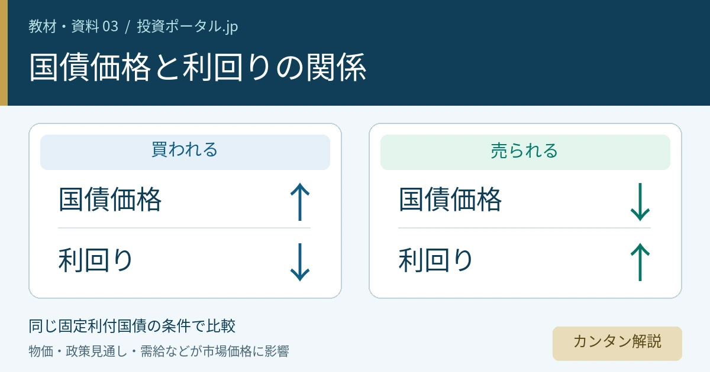

教材・資料 03 ／ 国債市場のつながり
国債価格・利回り・長期金利の関係を一覧で解説｜なぜ価格と金利は逆に動く？

国債売りで「金利上昇」になる理由を、ひとつの地図に
「国債が売られ、長期金利が上昇した」。ここで下がったのは国債の市場価格、上がったのはその価格で買う人から見た利回りです。同じ数字が上がったり下がったりしているわけではありません。
価格は「買うために払う金額」。表面利率は「額面に対する利息の割合」。利回りは「購入価格に対して、どれだけ収益を得るかを年率で示す数字」です。国債価格と利回り、表面利率と利回りは、それぞれ別物です。［資料1］
本教材は市場で売買される固定利付国債を中心に、額面・価格・利息・満期を区別して説明します。変動利付債・物価連動債・割引債は条件が異なります。個人向け国債の「変動10年」の適用利率や中途換金も、市場で売買される10年固定利付国債と同じ仕組みではありません。［資料4］ ［資料12］
また、ニュースの「金利」は政策金利・国債利回り・預金金利・貸出金利などを指します。分類に迷ったら教材01：金利の種類と関係へ。ここでは、国債の数字がどうつながるかに集中します。
1．国債を見るときに混同しやすい数字
まず「発行条件」「今の取引価格」「収益の割合」に分けましょう。表は通常の固定利付国債を前提にしています。スマートフォンでは左右にスクロールできます。
| 数字・用語 | 何を表すか | 決まり方 | 時間と変化 | 投資家の見方 | ニュースの注意点 |
|---|---|---|---|---|---|
| 額面金額 | 利払い・償還の基準となる金額。例：100万円。 | 発行条件として設定。 | 通常の固定利付債では一定。 | 購入代金とは分けて見る。 | 「額面100円当たり」の価格表示に注意。 |
| 発行価格 | 発行時に国債を引き受ける価格。 | 入札などで決定。 | その発行時の記録は変わらない。 | 発行時の投資額・条件を見る。 | 額面と一致するとは限らず、入札方式で価格の決まり方も異なる。 |
| 市場価格 | 発行後、市場で売買される価格。 | 売買・気配と需給で形成。 | 日々変化する。 | 今買う費用、今売る価値を見る。 | 額面や発行価格とは別。経過利子を含む受渡代金とも区別。 |
| 表面利率（クーポン） | 額面に対する年の利払い割合。 | 固定利付債では発行条件として決定。 | 固定なら償還まで一定。 | いくら利息を受け取るかを計算。 | 市場利回りの上昇で既発債の表面利率が上がるわけではない。 |
| 利払い額 | 額面×表面利率による利息。 | 額面・利率・支払条件で決まる。 | 固定利付債では所定の額。 | 年間の受取額と支払日を見る。 | 年額と1回の支払額、税引前後を区別。 |
| 利回り | 投資額に対する年率の収益尺度。 | 価格・利払い・償還までの期間などから算出。 | 市場価格と残存期間に応じ変化。 | 収益性を同じ計算条件で比較。 | 直接利回り／最終利回り、単利／複利を区別。 |
| 残存期間 | 今から償還までの残りの時間。 | 償還日は発行条件で設定。 | 時間経過とともに短くなる。 | いつ資金が戻るか、価格の金利感応度を見る。 | 発行時の「10年債」が常に残存10年とは限らない。 |
| 償還・償還価格 | 満期に元本を返すこと・その金額。 | 通常の固定利付国債では額面償還。 | 予定される額面償還額は一定。 | 購入価格との差を損益に含める。 | 110万円で買っても額面100万円なら元本の償還は100万円。 |
| 長期金利 | 長い期間の資金取引の金利。 | 市場で形成。代表指標は10年国債利回り。 | 市場見通しなどで変化。 | 長期の資金調達・資産評価の基準を見る。 | 日本の報道では新発10年国債利回りを指すことが多い。 |
定義の参照：財務省・日本銀行。比較の項目と整理は当サイト独自。［資料1］ ［資料2］ ［資料4］ ［資料5］ ［資料6］
2．価格と利回りが逆に動く理由
固定利付国債では、市場価格が変わっても、その国債が約束する利払いと償還額は原則として変わりません。同じ将来の受取りを安く買えるほど収益の割合が高くなり、高く買うほど低くなる。これが出発点です。
同じ利息と元本を受け取る権利に、より多くのお金を払うため。
同じ利息と元本を受け取る権利を、より少ないお金で買えるため。
逆に「もっと高い利回りが必要だ」と投資家の要求が変われば、その利回りに見合うよう価格が下がる、という見方もできます。価格を見て利回りを計算することと、要求利回りから妥当な価格を考えることは、同じ関係の両側です。
なお、取引には売り手と買い手がいます。「売りが優勢」とは売り手の人数だけの話ではなく、より低い価格でも売りたい動きなどが相場を押し下げる状態を表します。
3．額面100万円・年2万円の利払いで比べる
仮定：額面100万円、表面利率2％、年間利払い2万円。まず税金・手数料・経過利子を除き、1年分の利払いだけを購入価格で割ります。以下は仕組みの説明用で、実在する国債の現在値ではありません。
| 購入価格 | 年の利払い | 計算 | 直接利回り |
|---|---|---|---|
| 100万円 | 2万円 | 2万円 ÷ 100万円 | 2.00％ |
| 90万円 | 2万円 | 2万円 ÷ 90万円 | 約2.22％ |
| 110万円 | 2万円 | 2万円 ÷ 110万円 | 約1.82％ |
変わったのは分母の購入価格で、受け取る年2万円ではありません。ただし、これだけでは満期までの収益を十分に表せません。90万円で買って100万円で償還される差益、110万円で買って100万円で償還される差損が抜けているからです。
残存5年で満期まで持つ場合：単利の最終利回り
ここからは購入直後から償還までちょうど5年、5年間の利払い合計10万円、満期に額面100万円を受け取ると仮定します。支払いが予定どおり行われる前提です。
＝［年間利払い額 ＋（償還額 − 購入価格）÷ 残存年数］÷ 購入価格 × 100
| 購入価格 | 5年の利払い | 償還差損益 | 5年の収益合計 | 単利の最終利回り |
|---|---|---|---|---|
| 100万円 | 10万円 | 0円 | 10万円 | 2.00％ |
| 90万円 | 10万円 | ＋10万円 | 20万円 | 約4.44％ |
| 110万円 | 10万円 | −10万円 | 0円 | 0.00％ |
90万円のケースは［2万円＋（100万円−90万円）÷5］÷90万円×100＝約4.44％。110万円のケースは利払い10万円と償還差損10万円が相殺されます。直接利回りが約1.82％でも、満期までの単利収益率は0％という例です。算式は財務省の単利・税引前の考え方に沿った当サイトの仮定計算です。［資料2］
複利の最終利回り（YTM）と実現収益は別
複利の最終利回りは、将来の各利払いと償還金を割り引いた現在価値の合計が購入代金に一致する利率として求めます。受取りまでの時間や利払い頻度を扱うため、上の単利計算とは数字が異なります。
YTMの計算自体は所定の受払いからできますが、その年率に相当する満期時点の複利運用成果を実現するには、途中の利息を同じ利回りで再投資できることなどが必要です。実際の再投資利率、税・費用、途中売却の有無によって実現収益は変わります。
価格から利回りを考える式を見る（年1回利払いの説明用）
価格 P ＝ C÷(1+y) ＋ C÷(1+y)² ＋ … ＋ (C+F)÷(1+y)ⁿ
Cは年の利払い、Fは償還額、nは残存年数、yは複利利回りです。同じC・F・nなら、yを高くするほど各受取額の現在価値は小さくなり、Pは下がります。実務では半年ごとの利払い、日数計算、経過利子なども考慮します。
4．新発債と既発債：市場金利に合わせて価格が調整される
新発債は新しく発行される国債、既発債はすでに発行され、市場で取引されている国債です。発行市場と流通市場はつながっており、新発債の発行条件にも市場の実勢が反映されます。［資料3］
- 同じ通貨・信用力・残存期間などの国債に対し、市場が以前より高い利回りを求める環境になる。
- 新たな国債もその環境に沿う条件で発行される一方、既発の固定利付債の利払い条件は変わらない。
- 低い利払いの既発債を以前と同じ価格で買う魅力は弱まりやすく、価格が下がって利回りが市場水準に近づく。
市場が求める利回りが下がる場合は、相対的に高い利払いを持つ既発債に買いが入り、価格が上がる方向に調整されやすくなります。
5．国債市場の全体関係図
上から下へ全体像をたどり、中央の「市場価格 ⇄ 市場が求める利回り」を確認してください。二つの独立した出来事が順に起きるというより、売買と価格付けの中で同時に対応しています。

国債の条件を出発点に、市場価格と利回りの対応を読み、そのうち長い年限の利回りを長期金利の指標として参照します。企業・家計への波及も、その後の景気・政策見通しを通じて市場に戻ってきます。
6．国債利回りと長期金利はどうつながる？
国債利回りは、特定の国債に投資した場合の収益率です。一方、長期金利は長い期間の資金取引の金利を指す言葉で、代表例として10年国債利回りが使われます。日本のニュースでは新発10年国債の流通利回りが「長期金利」と呼ばれることが多くあります。［資料5］ ［資料6］
したがって「10年国債の価格が下がり利回りが上がった」と「長期金利が上がった」は、同じ市場の動きを違う言葉で説明している場合があります。国債利回りに別の金利を加えて長期金利になるわけではありません。2年・20年・30年など、別の年限が同じ方向や幅で動くとも限りません。
米国の「10年国債利回り」という表現
米国でも10年国債利回りは長期金利をみる重要な指標です。米国の10年物は公式の商品分類ではTreasury Noteに含まれます。日本語の「米10年国債利回り」は対象国と年限を明示した表現で、日本の「長期金利」より国債の対象が読み取りやすくなっています。［資料9］
また、米国財務省の公表する10年のパー利回りは、市場価格を使って推計した利回り曲線上の指標です。ニュースの特定銘柄の取引利回りと、統計の10年値は、時刻・対象・算出方法が違うことがあります。比較では出所をそろえましょう。［資料10］
| 対象 | つながり | 一対一ではない理由 |
|---|---|---|
| 企業の資金調達 | 社債発行や長期借入の基準となる市場金利に影響。 | 信用力、信用スプレッド、満期、契約条件も反映。 |
| 住宅ローン | 新規の固定金利の設定などに長期の市場金利が影響。 | 既存の全期間固定の契約金利が直ちに変わるわけではない。変動型は短期金利や銀行の基準も重要。 |
| 株式の評価 | 将来利益を現在価値へ割り引く金利の上昇は、評価の下押し要因になり得る。 | 景気改善で利益予想も増える場合や、業種ごとの差がある。 |
| 為替 | 各国との金利差や将来の金融政策予想に影響。 | リスク回避、資金の流れ、織り込み状況も作用。円高・円安を単独で決めない。 |
用語の詳細は長期金利とは？、期間別の違いはイールドカーブとは？へ。政策金利・実質金利との分類は教材01で整理できます。
7．国債入札・発行量・需給の関係
国は国債を発行して資金を調達します。市場性国債の発行では入札が重要な役割を持ち、参加者の応募を通じて発行条件が決まります。発行された国債は流通市場で取引されます。新規供給の場である入札と、既発債の売買がある流通市場を分けて考えましょう。［資料4］ ［資料7］
| 見る材料 | 確認すること | 注意点 |
|---|---|---|
| 応募額・募入額 | 応募額を募入額で割る応札倍率などで、募集に対する応募を確認。 | 同じ年限・方式の過去や事前予想と比較。倍率だけで強弱を断定しない。 |
| 落札価格・利回り | 入札前の市場水準に比べ、低い価格・高い利回りを求められたか。 | 価格入札か利回り入札か、平均か限界の落札条件かを確認。 |
| テール | 平均と限界の落札条件の開きを確認。 | 定義は市場・方式によって異なる。日本の価格競争入札では平均価格と最低価格の差などを見る。 |
| 発行量と需要 | 供給される年限・量に対し、投資家がどれだけ保有したいか。 | 増発でも需要が吸収する場合があり、発行量だけで価格は決まらない。 |
需要が予想より弱いと「今の価格では買いが集まりにくい」と受け止められ、流通市場でも価格下落・利回り上昇につながる場合があります。ただし入札前に価格調整が済んでいたり、結果の発表後に買い戻しが入ったりすることもあります。
入札の指標や読み方は国債入札とは？へ。日程・発行条件・結果は財務省の入札カレンダーで確認できます。［資料7］ ［資料8］
8．政策金利が据え置きでも、長期金利は動く
長期金利には「今日の政策金利」だけでなく、これから先の短期金利の予想や、長く保有するリスクへの対価（タームプレミアム）が関わります。そのため、政策金利が動かない日でも、見通しや国債需給が変われば利回りは動きます。［資料11］ ［資料13］
インフレが意識されると国債が売られる場合
固定された利息や償還金で将来買えるものが減ると見込まれたり、中央銀行の利上げが予想されたりすると、投資家が求める名目利回りが高まり、国債価格に下押し圧力がかかる場合があります。
ただし、CPIの上昇率が高くても市場予想を下回れば反応は変わり得ます。物価上昇と同時に景気悪化への警戒や国債への需要が強まる場合もあります。「インフレの実績」「将来の予想」「発表前の織り込み」を分けることが大切です。
利下げが発表されたのに長期金利が上がる場合
その利下げが事前に織り込まれていて、先行きの利下げ回数の予想が減った場合や、期待インフレ・国債供給への懸念が強まった場合には、長期金利が上がることもあります。金融政策の決定と市場の反応を、一対一のルールにしないでください。
9．物価 → 国債市場 → 金利を教材でつなぐ
↓ 実際の物価と期待インフレ、政策見通しを整理
教材03：国債価格・利回りの関係（このページ）
↓ 市場が求める利回りと価格の対応、10年国債利回りを確認
教材01：金利の種類と関係
この並びは理解を進める順序です。「物価上昇なら必ず国債安、必ず長期金利上昇」という予測の式ではありません。物価のニュースは教材02、国債売りの仕組みは教材03、金利全体の分類は教材01へ戻って確認できます。
物価の実績と将来予想を区別する比較資料。
イールドカーブも含めて金利の全体像を整理。
10．国債ニュースを見る10のチェックフロー
「長期金利上昇」「国債売り」「国債入札低調」を見たら、見出しだけで結論を出さず、この順に確認します。
- どの国・通貨の、何年国債か？日本10年、米国10年、日本30年など、記事の対象を特定します。
- 価格の話か、利回りの話か？円などの価格表示と％の利回りを分けます。「金利」が表面利率を指していないかも確認。
- いつ、どの年限が、どれだけ動いたか？比較時点をそろえ、前日比と発表直後を区別。1bpは0.01パーセントポイントです。
- 政策金利の見通しに変化があったか？実際の決定だけでなく、声明・発言で将来の利上げ／利下げ予想が変わったかを見ます。
- 物価材料はあったか？CPI・PCEなどについて、実績の水準、事前予想との差、期待インフレを区別します。
- 景気・雇用の材料はあったか？成長や雇用の強弱が、政策予想と国債需要の両方にどう関わるかを考えます。
- 入札・発行量・買入れなどの需給材料は？該当年限、発行計画、入札結果、中央銀行の買入れ、ポジション調整を確認。
- 海外の同じ年限の金利も動いたか？時差と発表時刻に注意して比較。他国と同方向でも、それだけで原因は確定しません。
- イールドカーブ全体ではどう変わったか？2年・10年・30年などを並べ、長期だけの上昇か、全体の変化かを区別します。
- 同時に起きただけで原因と断定していないか？発表時刻と値動き、複数資料を照合し、確認できた事実と解釈を分けます。
「対象は＿＿国の＿＿年債。＿＿時点から価格／利回りが＿＿。同じ時間帯の材料は＿＿。原因として考えられるのは＿＿だが、＿＿は未確認。」
11．初心者が混同しやすいポイント
国債価格が下がるとなぜ利回りが上がる？
同じ利払いと償還金を、より少ない購入代金で受け取れるためです。固定された将来の受取りに対して、投資額の分母が小さくなります。
利回りが上がったら、すでに持っている国債の利息も増える？
固定利付国債の表面利率と所定の利払いは変わりません。今の市場価格で買う場合の利回りが変わります。変動利付債は別の条件です。
表面利率と利回りは同じ？
違います。表面利率は額面に対する利息の割合、利回りは購入価格に対する収益の尺度です。最終利回りには償還差損益と残存期間も関係します。
国債が売られるとなぜ「金利上昇」と報道される？
その「金利」が市場で形成される国債利回りを指すためです。特に日本の新発10年国債利回りは長期金利の代表指標として報道されます。
政策金利と10年国債利回りは同じ？
別物です。政策金利は中央銀行の政策上の金利・誘導目標など。10年国債利回りは先々の政策予想や需給などを反映して市場で形成されます。
国債は満期まで持てば市場価格を気にしなくていい？
予定どおり支払われる通常の固定利付国債なら、途中の市場価格下落だけで満期の額面償還額が減るわけではありません。ただし額面より高く買えば償還差損があり、途中で現金が必要になれば売却損も起こり得ます。物価上昇による購買力低下や、資金を別の運用に使えない機会費用、発行体の信用リスクも残ります。
国債入札が弱いと必ず金利が上がる？
必ずではありません。事前の織り込みや入札前後のポジション調整、同じ時間帯の政策・物価・景気・海外金利の材料にも左右されます。
中央銀行が利下げすると長期金利も必ず下がる？
必ずではありません。長期金利は将来の短期金利の見通しや保有リスクへの対価も反映します。今の利下げと、先行きの予想の変化を分けて見ます。
国債利回り上昇は株価に必ず悪い？
必ずではありません。資金調達コストや割引率の上昇は下押し要因ですが、景気改善による利益予想の上方修正などが同時に起こる場合もあります。企業や業種によって影響も異なります。
利回りが高い国債ほど得？
利回りだけで有利不利は決まりません。通貨・信用力・残存期間・流動性・税や費用、利回りの計算方式をそろえて比較する必要があります。
13．公式一次情報・参考資料
資料確認日：2026年10月5日。政府・中央銀行の定義と制度説明を優先し、新発10年国債の市場用語のみ市場データ公表元で補足しました。比較表・数値例・関係図・確認フローは当サイトの独自編集です。
-
財務省｜表面利率・利率・クーポンレート・利回りの違い
固定利付債の利払いと収益率の区別。 -
財務省｜国債の利回りはどのように決まるか
購入価格・残存期間と、税引前・単利の最終利回りの算式。 -
財務省｜国債の表面利率はどのように決まるか
発行時の市場実勢とクーポン設定の関係。 -
財務省｜ご存知ですか？国債
国債の基本、利払い・償還・売却。 -
日本銀行｜長期金利
長期金利の定義と10年国債利回りの代表性。 -
日本相互証券｜主要年限レート（長期金利等）
政府機関ではなく市場データ公表元。新発10年国債を代表指標とする実務上の用語を補足。 -
財務省｜10年利付国債の入札発行（2026年9月1日入札）
発行条件・価格競争入札・発行価格の決め方を確認する制度の実例。現在値の説明には使用していません。 -
財務省｜入札カレンダー
国債入札の予定・通知・結果を確認する入口。 -
TreasuryDirect｜Treasury Notes
米10年物の公式分類と固定利払い。 -
米国財務省｜Interest Rate Statistics
市場価格から推計するパー利回り曲線の定義。 -
日本銀行｜量的・質的金融緩和と長期金利
将来の短期金利予想・タームプレミアム・国債供給。2015年の研究資料で、現在の政策運営を示すものではありません。 -
財務省｜個人向け国債の金利についてのよくある質問
個人向け国債「変動10年」の適用利率と基準金利の区別。 -
日本銀行｜金融政策の概要
金融政策と市場金利への働きかけの基本。 -
TreasuryDirect｜Understanding Pricing and Interest Rates
米国債の価格・利率・利回りの対応。
長く参照できる仕組みの教材とするため、現在の国債価格・利回りの水準は掲載していません。実際の取引では銘柄・時刻・利回りの計算方式を確認してください。
本資料を紹介する際は、ページタイトル・投資ポータル.jp・本ページURL・資料確認日を添えると、読者が前提と出典を確認しやすくなります。
14．迷ったら「条件・価格・利回り」に戻る
固定利付国債の条件が同じなら、価格が下がると利回りが上がり、価格が上がると利回りが下がります。ただし利回りが動いた理由は、物価・政策予想・景気・需給などを分けて確認する必要があります。
日本で長期金利として報道されることが多いのは新発10年国債利回りです。「国債売りで金利上昇」に迷ったら、100万円の例、国債市場の関係図、ニュースチェックフローへ戻って整理してください。
編集・作成：ミルクティー（運営者プロフィール） ／ 投資ポータル.jp
本ページは金融ニュースを理解するための情報提供であり、特定商品の購入や売買の推奨ではありません。